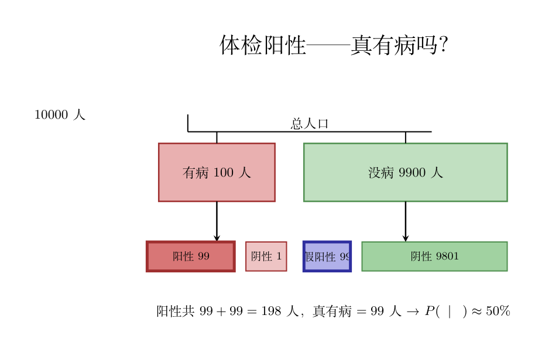

画面： 你在街上随机抓一个人。他是左撇子的概率大约是 10%。但如果我告诉你「这个人在用左手写字」——那他是左撇子的概率瞬间变成接近 100%。
「知道了新信息之后」的概率，就是条件概率。
$$P(A \mid B) = \frac{P(A \cap B)}{P(B)}$$逐符号拆开：
直观理解： 原来是「全世界里 A 有多少」，条件概率是「只看 B 的世界里 A 有多少」。分母 $P(B)$ 就是把这个新世界归一化到 1。
把条件概率公式两边乘 $P(B)$：
$$P(A \cap B) = P(A \mid B) \cdot P(B)$$这看起来平凡，但非常有用——它把「同时发生」拆成两步：先发生 B，再在 B 发生的条件下发生 A。
画面： 工厂有三台机器 A、B、C，分别生产 50%、30%、20% 的产品。A 的次品率 1%，B 的次品率 2%，C 的次品率 5%。随机抽一件，它是次品的概率是多少？
直接想有点乱——但可以按机器拆开：次品可能来自 A、B、或 C。把每种情况加起来：
$$\begin{aligned} P(\text{次品}) &= P(\text{次品} \mid A) \cdot P(A) + P(\text{次品} \mid B) \cdot P(B) + P(\text{次品} \mid C) \cdot P(C) \\ &= 0.01 \times 0.5 + 0.02 \times 0.3 + 0.05 \times 0.2 \\ &= 0.005 + 0.006 + 0.01 = 0.021 \end{aligned}$$这就是全概率公式：把一个复杂事件拆成互斥的几种情况，分别算再加起来。
$$P(A) = \sum_i P(A \mid B_i) \cdot P(B_i)$$前提：$B_1, B_2, \dots$ 是互斥且穷尽的——把所有可能的情况全覆盖，且彼此不重叠。三台机器恰好满足这点。
刚才工厂问题是「知因求果」：知道是哪台机器 → 算次品率。
贝叶斯公式是知果求因：拿到了一个次品 → 它最可能是哪台机器生产的？
从条件概率定义出发：
$$P(B \mid A) = \frac{P(A \cap B)}{P(A)} = \frac{P(A \mid B) \cdot P(B)}{P(A)}$$分子用了乘法公式 $P(A \cap B) = P(A \mid B) \cdot P(B)$。把分母用全概率展开：
$$\boxed{P(B_i \mid A) = \frac{P(A \mid B_i) \cdot P(B_i)}{\sum_j P(A \mid B_j) \cdot P(B_j)}}$$这个公式的灵魂： 把因果关系翻转了。$P(A \mid B_i)$ 是「B 导致 A 的概率」（因→果），而 $P(B_i \mid A)$ 是「看到 A 后反推 B 的概率」（果→因）。
逐零件命名：
一种病发病率 1%。检测准确率 99%（有病的人 99% 测出阳性，没病的人 99% 测出阴性）。你测出阳性——你有病的概率是多少？
直觉说 ~99%。错。答案是 ~50%。 来算：
已知条件：
算 $P(病 \mid 阳性)$： 贝叶斯公式：
$$\begin{aligned} P(病 \mid 阳性) &= \frac{P(阳性 \mid 病) \cdot P(病)}{P(阳性 \mid 病) \cdot P(病) + P(阳性 \mid 没病) \cdot P(没病)} \\[8pt] &= \frac{0.99 \times 0.01}{0.99 \times 0.01 + 0.01 \times 0.99} \\[8pt] &= \frac{0.0099}{0.0099 + 0.0099} = \frac{0.0099}{0.0198} = 0.5 \end{aligned}$$为什么只有 50%？ 因为发病率太低了（1%）。10000 个人里，有 100 个真病人（99 个测出阳性）和 9900 个好人（99 个假阳性）。阳性总共 99+99=198 人，其中只有 99 个真有病——恰好一半。

假阳性虽然比例低（1%），但没病的人基数太大（9900），假阳性的绝对人数（99）和真阳性（99）一样多。这就是基础率忽略——直觉只盯住了 99% 的准确率，忘了发病率 1% 这个先验。
# 00-17 贝叶斯公式：模拟体检阳性问题（发病率1%，检测准确率99%）
# 导入numpy，别名np
import numpy as np
# 模拟 100000 人的体检数据
# 总模拟人数：10万
N = 100000
# default_rng(seed)：新版随机数生成器，seed保证可复现
rng = np.random.default_rng(42)
# 1% 的人真有病 → 生成10万个布尔值，True概率=0.01
# random(N)：生成N个[0,1)均匀随机数，<0.01→True(有病)
has_disease = rng.random(N) < 0.01
# np.where(条件, 真时取值, 假时取值)：按条件二选一
# 有病的人：99% 测出阳性（灵敏度）；没病的人：1% 假阳性
test_positive = np.where(
has_disease, # 条件：是否有病（布尔数组）
# 真有病 → 99%概率测出阳性（灵敏度）
rng.random(N) < 0.99,
# 没病的 → 1%概率假阳性
rng.random(N) < 0.01
)
# 在测出阳性的人里，有多少真有病？→ P(病|阳性)
positives = test_positive.sum() # .sum()对布尔数组：True=1 → 阳性总人数
true_positives = (test_positive & has_disease).sum() # & 逻辑与：阳性且真有病 → 真阳性人数
# 阳性人数 ≈ 198人(99真阳性+99假阳性)
print(f"阳性总人数: {positives}")
# 真有病且阳性 ≈ 99人
print(f"真阳性(真有病): {true_positives}")
print(f"P(病|阳性) = {true_positives}/{positives} = {true_positives/positives:.3f}")
# :.3f = 保留3位小数，大约 0.500——和贝叶斯公式算的一样
贝叶斯公式不是在玩符号——它纠正了一个真实的思维错误。